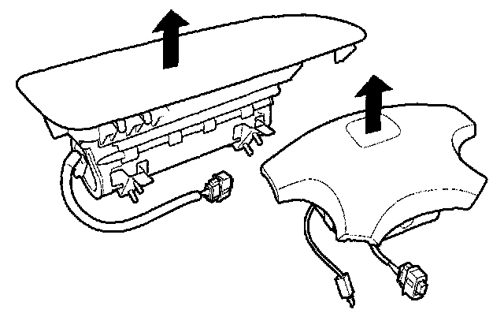
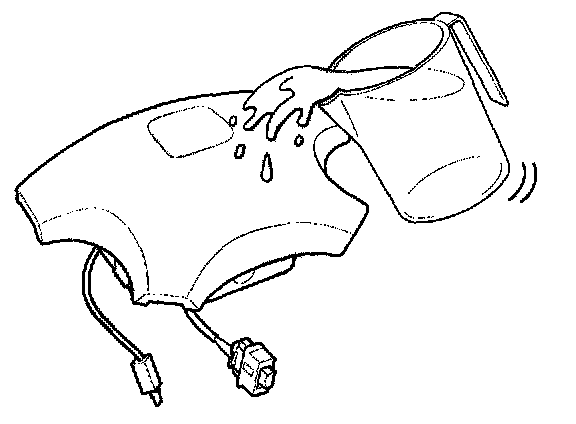
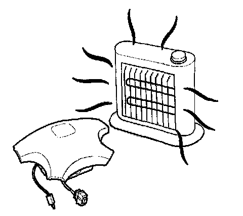
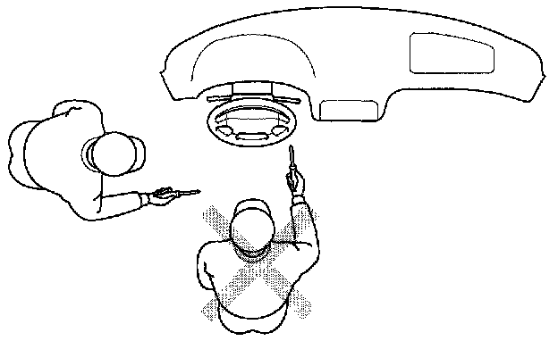

Airbag Handling and Storage
WARNING:- To avoid rendering the SRS inoperative, which could lead to personal injury or death in the event of severe frontal collision, all SRS service work must be performed by an authorized mechanic.
- Improper service procedures, including incorrect removal and installation of the SRS, could lead to personal injury caused by unintentional activation of the airbags.
- Do not bump the SRS unit. Otherwise, the system may fail in case of a collision, or the airbags may deploy when the ignition switch position is ON (II).
- All SRS electrical wiring harnesses are covered with yellow insulation. Related components are located in the steering column, front console, dashboard, dashboard lower panel, and in the dashboard above the glove box. Do not use electrical test equipment on these circuits.
Do not disassemble the airbags. it has no serviceable parts. Once an airbag has been deployed, it cannot be repaired or reused.
For temporary storage of the airbag during service, please observe the following precautions.
WARNING: If the airbag is improperly stored face down, accidental deployment could propel the unit with enough force to cause serious injury.

Store the removed airbag with the pad surface up. Never put any things on the removed airbag.

Keep free from any oil, grease, detergent, or water to prevent damage to the airbag.

Store the removed airbag on a secure, flat surface away from any high heat source (exceeding 200° F / 93° C).
Never perform electrical inspections to the airbags, such as measuring resistance

Do not position yourself in front of the airbag assembly during removal, inspection, or replacement.
Refer to the scrapping procedures for disposal of the damaged airbag.